ABOUT
IL PROGETTO
Il sito che avete attraversato, o che state per attraversare, restituisce una delle molte forme possibili che questo universo può assumere. Nulla è fisso, tutto muta: ogni visita può svelare una sfaccettatura diversa, perché ciò che vedete è solo un frammento emerso, destinato presto a svanire.
In questa sezione troverete uno sguardo su pensieri, paesaggi e logiche che danno struttura al progetto. Scoprirete chi lo ha immaginato e come ogni dettaglio sia nato da un ascolto attento e sensibile.
Infine, un tributo necessario all’universo poetico di Venerus, che continua a espandersi, anche qui.
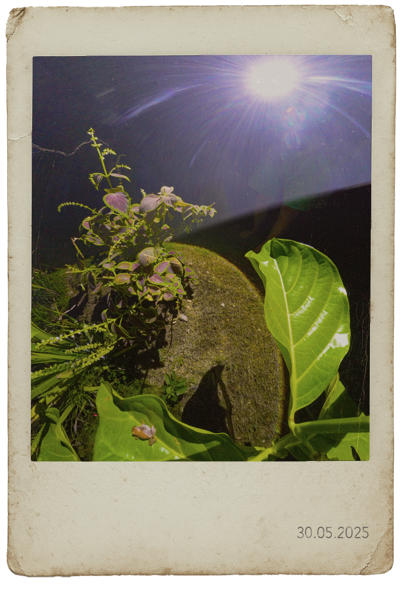
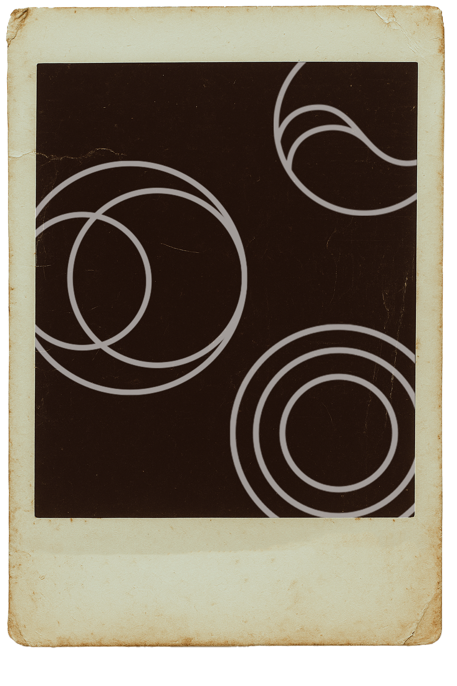
LE VARIABILI
A guidare ogni mutazione sono tre Variabili, legate ai cicli naturali e ai loro riflessi interiori:

La rotazione terrestre scandisce il passaggio dal giorno alla notte, influenzando luce, suono e stati d’animo

Le fasi lunari definiscono i tempi del racconto, i suoi silenzi e le sue apparizioni improvvise

Le maree modulano l’intensità emotiva del paesaggio, portando con sé flussi, vuoti, ritorni
LE VARIABILI
A guidare ogni mutazione sono tre Variabili, legate ai cicli naturali e ai loro riflessi interiori:
La rotazione terrestre scandisce il passaggio dal giorno alla notte, influenzando luce, suono e stati d’animo
Le fasi lunari definiscono i tempi del racconto, i suoi silenzi e le sue apparizioni improvvise
Le maree modulano l’intensità emotiva del paesaggio, portando con sé flussi, vuoti, ritorni
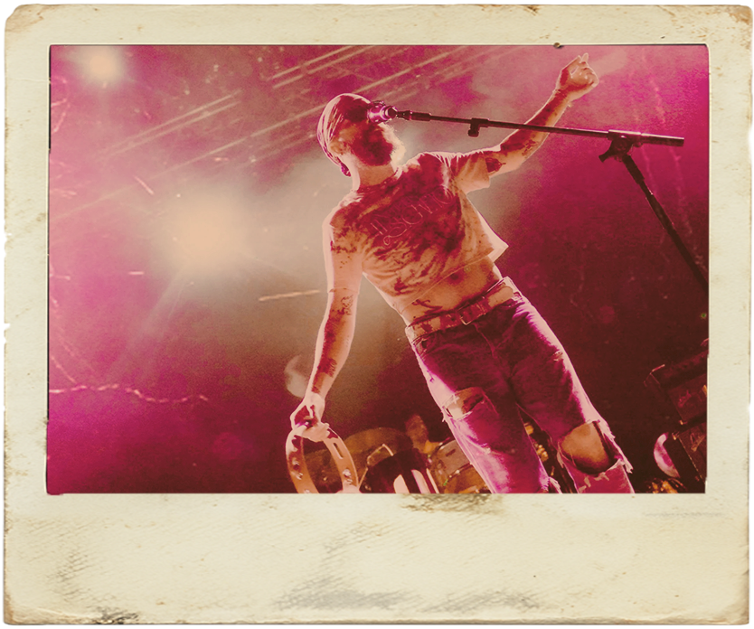
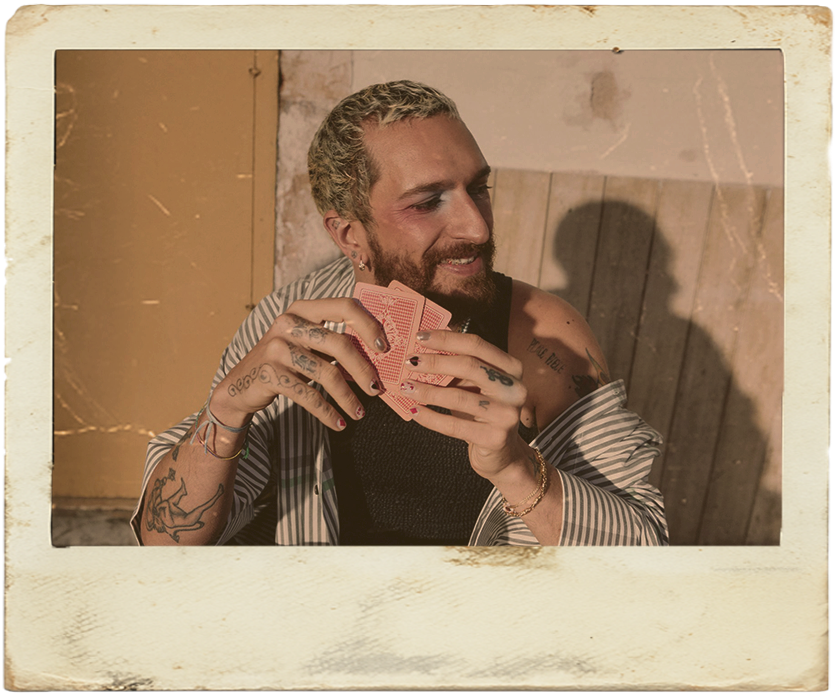
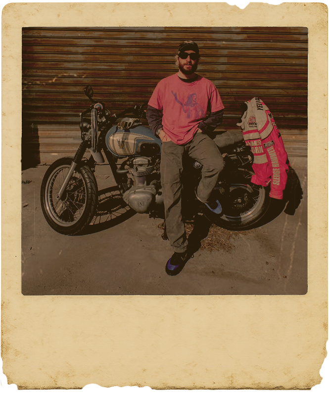
LA V.
Venerus è stato il punto di partenza, la scintilla che ha acceso tutto. Le sue parole, la sua musica e il suo immaginario ci hanno aperto visioni, intuizioni e stati d’animo che sono diventati materia viva del nostro lavoro.
Non volevamo raccontarlo né rappresentarlo, ma lasciarci attraversare dal suo universo per trasformarlo in uno spazio emotivo, fluido, in continua metamorfosi.
Questo progetto è il risultato di ciò che ha smosso in noi il suo universo in continua a espansione, anche qui.
IL TEAM
Il progetto prende forma da sei sguardi, sei sensibilità diverse, unite all’interno del corso di Web e Digital Design al Politecnico di Milano, dove studiamo Design della Comunicazione. Grazie a una rara occasione d’ascolto e confronto, abbiamo potuto entrare in dialogo diretto con Venerus. I nostri dialoghi assieme a una esplorazione profonda della sua arte e del suo vissuto hanno aperto varchi da cui abbiamo iniziato a muoverci. Abbiamo così decifrato le logiche invisibili che abitano il suo mondo, cercando di interpretarle per restituirne una possibile forma. Qui accanto, trovate delle cassette: ognuna racconta qualcosa di noi, nel linguaggio di questo sito.
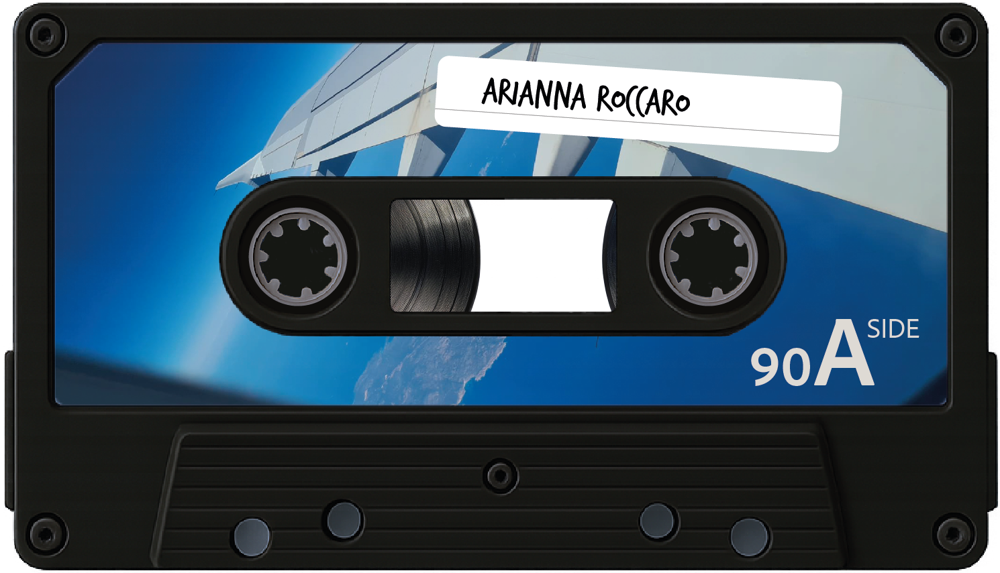
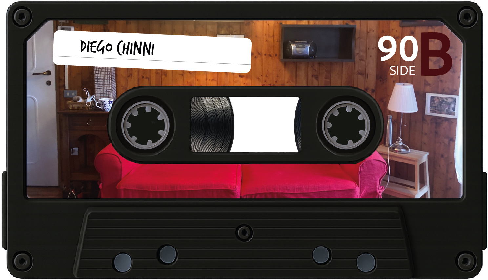
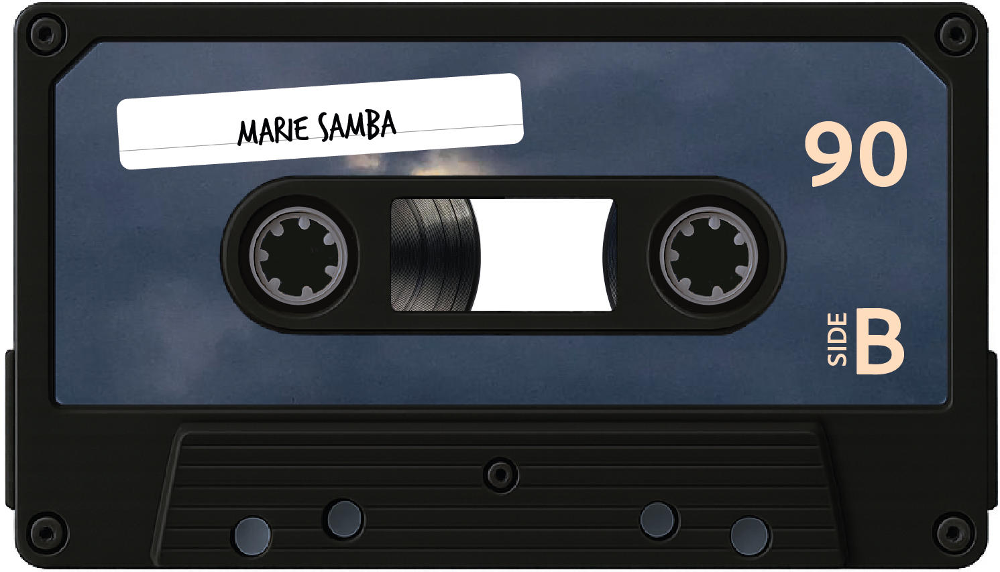
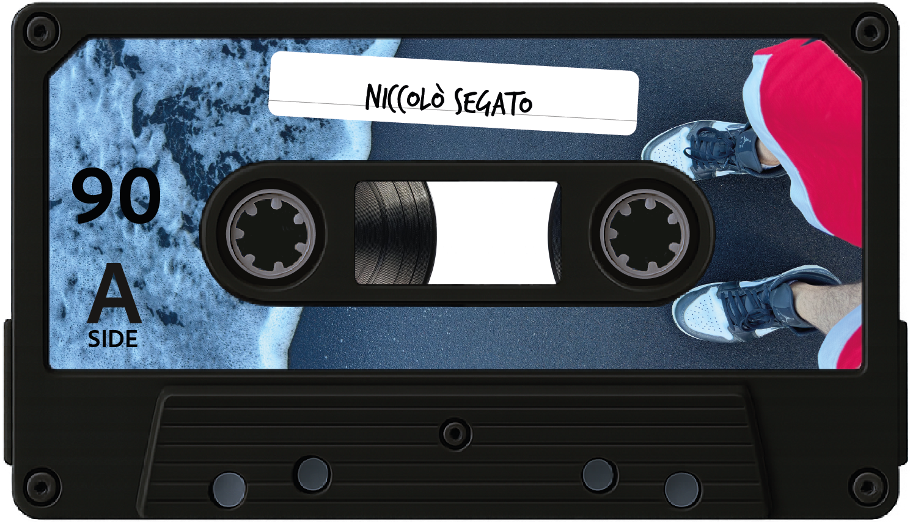
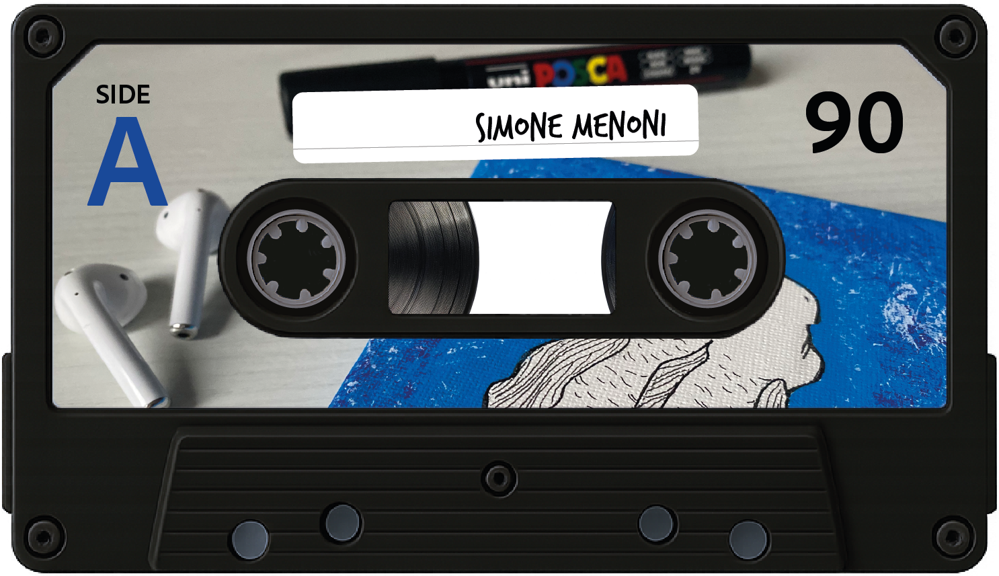
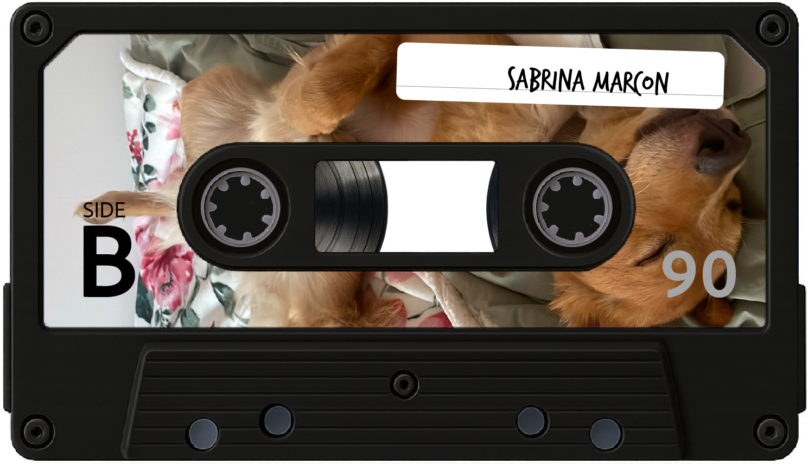